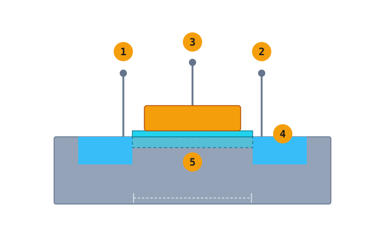

从物理到晶体管：认识我们要制造的东西
芯片上所有工艺，最后都是为了做出两样东西：晶体管和导线。这一章先把晶体管拆开看——它长什么样，以及栅极上的一点电压为什么能让它开和关。
01五个名字，一个开关
MOSFET 的构造可以想成一个水闸门：源极是进水口，漏极是出水口，栅极是闸门。闸门和硅之间隔着极薄的一层绝缘层，闸门下方那片硅就是沟道。

为什么叫「金属氧化物半导体」：这名字来自早期结构。后来栅极改用多晶硅，现在又改回金属；绝缘层也不只是氧化硅。名字一直沿用，但三层材料的实际做法已经换过好几轮。
02加电压，沟道就出现
下面这个可以拖。栅极电压超过阈值（Vt）时，栅极下方的硅里会形成一层反型层，把源极和漏极接通；拿掉电压，通路消失。这就是数字电路里的 1 和 0。
剖面示意，尺寸不成比例。蓝色是电子流（NMOS），橘色是空穴流（PMOS）。
NMOS：栅极加高电压，电子被吸引到界面，形成 N 型沟道，源漏导通。
为什么这叫「开关」而不是「放大器」：数字电路只用它的两个极端——完全导通、完全关断。中间那段连续变化的区域是模拟电路的地盘，数字设计会刻意快速穿过它，因为停留越久越费电。
03NMOS、PMOS 与 CMOS
把两种极性的晶体管成对使用，就是 CMOS。它省电的原因很朴素：不切换的时候，总有一个是关着的，电流没有通路。
NMOS
靠电子导电。栅极加高电压时打开。速度快，但关断时有漏电。
PMOS
靠空穴导电。栅极加低电压时打开。速度慢一些，但和 NMOS 配对后静态几乎不耗电。
对制造意味着什么：同一片晶圆上要同时做出两种晶体管——NMOS 做在 P 井里，PMOS 做在 N 井里。这就需要多次光刻和离子注入，分别处理不同区域。CMOS 的省电是设计换来的，代价压在工艺上。
04从晶体管到芯片
几个晶体管组成逻辑门，许多逻辑门组成运算电路，再用好几层金属导线把它们连起来——这才是芯片。所以晶圆厂的工作分两大段：先做晶体管（FEOL），再盖金属层（BEOL）。
本章重点
- 芯片由晶体管和金属导线组成，所有工艺都是为了做出这两样东西。
- 半导体的导电能力可以控制，掺杂让硅变成 N 型或 P 型。
- MOSFET 是用栅极电压控制的开关，阈值电压 Vt 是最重要的参数之一。
- CMOS 把 NMOS 和 PMOS 成对使用，非常省电，但制造时要分别处理两种区域。
- 晶体管越做越小，漏电问题促使结构从平面走向立体（见第 12 章）。